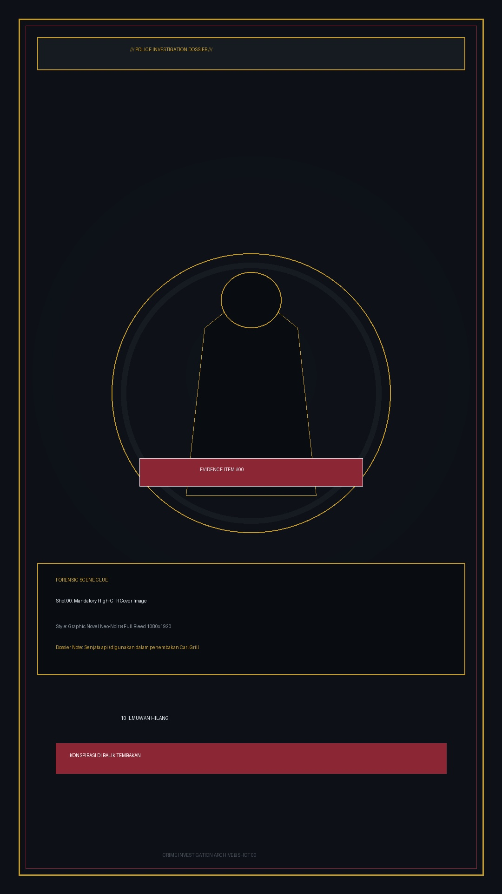
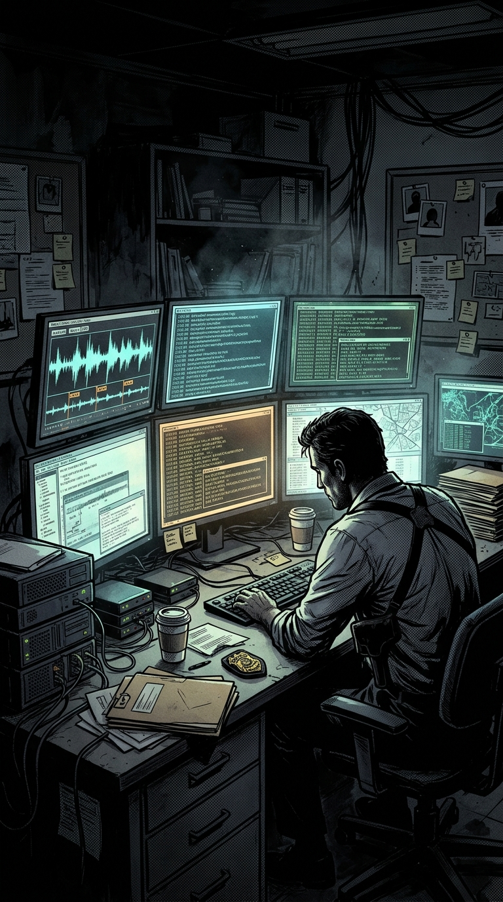
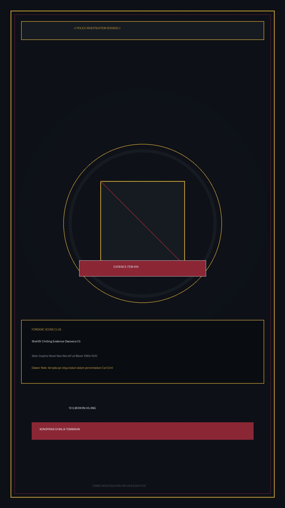
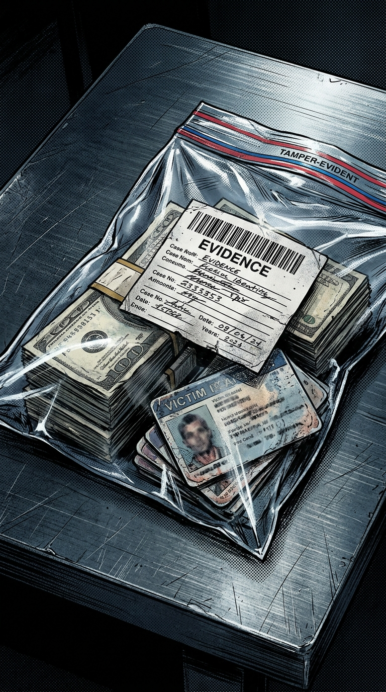
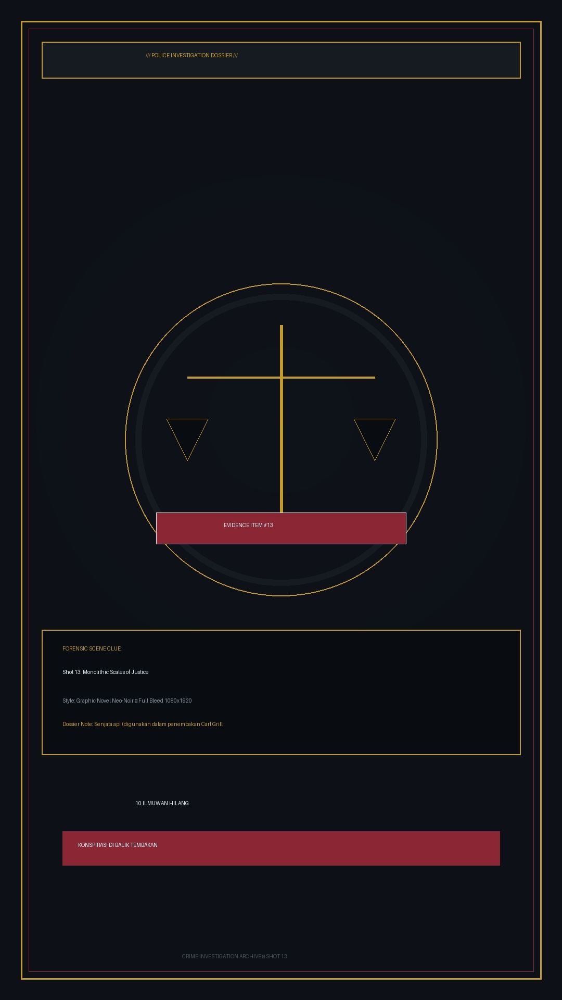

Sepuluh ilmuwan lenyap. Satu tewas ditem
Sepuluh ilmuwan lenyap. Satu tewas ditembak.
Kematian Carl Grillmair memicu teori kon
Kematian Carl Grillmair memicu teori konspirasi global yang mencekam.

Freddy Snyder, pria lokal dua puluh semb
Freddy Snyder, pria lokal dua puluh sembilan tahun, dituduh sebagai pembunuhnya.

Februari. Grillmair tewas di rumahnya di
Februari. Grillmair tewas di rumahnya di Llano, California. Istri mendengar tembakan.

Senjata api ditemukan. Sidik jari mengar
Senjata api ditemukan. Sidik jari mengarah ke Snyder. Perampokan jadi motif awal.

Polisi menyelidiki. Namun dunia maya jus
Polisi menyelidiki. Namun dunia maya justru sibuk dengan daftar kematian misterius.

Sepuluh nama terkait riset sensitif. Hil
Sepuluh nama terkait riset sensitif. Hilang. Tewas. Tanpa pola jelas.

Penyelidik amatir mencurigai TKP rahasia
Penyelidik amatir mencurigai TKP rahasia. Konspirasi mulai membesar.

Snyder ditangkap. Dakwaan pembunuhan dan
Snyder ditangkap. Dakwaan pembunuhan dan perampokan resmi diajukan.

Bukti utama: senjata api dan kesaksian L
Bukti utama: senjata api dan kesaksian Louise Grillmair yang melihat langsung.

Namun spekulasi liar terus tumbuh. Uang,
Namun spekulasi liar terus tumbuh. Uang, rahasia, dan transaksi gelap.

Keluarga korban menolak teori konspirasi
Keluarga korban menolak teori konspirasi. Mereka menyebutnya menjijikkan.

Sidang berlangsung. Fakta kriminal berta
Sidang berlangsung. Fakta kriminal bertarung dengan narasi konspirasi.

Vonis menanti. Keadilan bagi Grillmair,
Vonis menanti. Keadilan bagi Grillmair, atau misteri yang tetap terbuka?

Brankas arsip terkunci. Kasus ditutup, t
Brankas arsip terkunci. Kasus ditutup, tapi pertanyaan tetap ada.